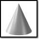
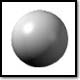

All images are loaded in a table with padding-left of 1cm by setting TD as the HTML selector in an embedded stylesheet.


[Right-click anywhere in the window to view the full source code.]
© 1999 Microsoft Corporation. All rights reserved. Terms of use.